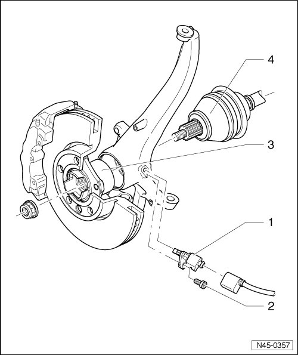

Front Wheel Speed Sensor Overview
Front Wheel Speed Sensor Overview

1 Anti-lock Brake System (ABS) wheel speed sensor
• Before inserting sensor, clean inner surface of bore and coat with polycarbamide grease (G 052 142 A2).
• Removing and installing, refer to --> [ Front Wheel Speed Sensor ] Front Wheel Speed Sensor.
2 Bolt, 8 Nm
3 Wheel hub with wheel bearing
• The ABS sensor ring is installed in the wheel bearing.
4 Drive axle